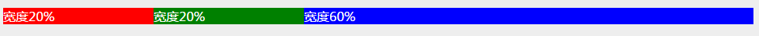

UL 布局
相对 TABLE 多列布局，速度比较快，支持多列。
另外建议尽量不要使用 DIV 布局，采用 XIUNO 的 UL 或者 DL 布局，更加的清晰，简单，稳定。
【示例代码】：
<ul class="row">
<li class="col-2" style="background: red; color: #FFFFFF;">宽度20%</li>
<li class="col-2" style="background: green; color: #FFFFFF;">宽度20%</li>
<li class="col-6" style="background: blue; color: #FFFFFF;">宽度60%</li>
</ul>
【浏览器打开效果】：
